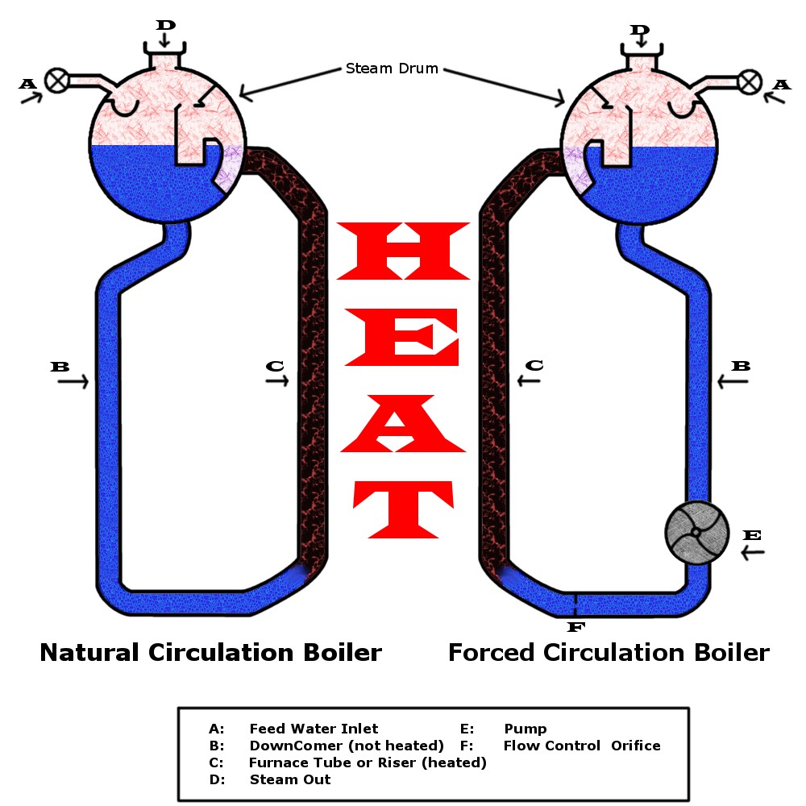

The Dance of Water: Natural Circulation
Ever seen how hot air rises above a candle? Boilers use a similar principle for **Natural Circulation**. It's all about density differences!
- Imagine a loop of pipes in the boiler. Some pipes (risers or water wall tubes) are close to the furnace fire, getting super hot.
- The water inside these risers heats up, and some of it turns into steam bubbles. This hot water/steam mixture is like a bubbly, excited fluid – it's much lighter (less dense) than plain water.
- Because it's lighter, this bubbly mixture naturally floats upwards towards the steam drum (a big tank at the top).
- Meanwhile, other pipes (downcomers) are further from the fire, carrying cooler, denser water downwards from the drum to replace the rising mixture.
This creates a continuous, natural loop – like a convection current in a pot of boiling water, but much more organized! This "thermosyphon effect" is the driving force, powered by the difference in weight (hydrostatic head) between the heavy cold water column in downcomers and the light hot mixture in risers.
This method is common in many low to medium pressure boilers, like the famous Babcock & Wilcox water-tube boiler.
Self-Question: What happens if the fire is too weak or the pipes are not designed well?
Answer: Natural circulation might become sluggish or stop, leading to poor heat transfer and potentially overheating some tubes! Boiler design is crucial.
Giving Water a Push: Forced Circulation
Sometimes, natural "floating" isn't enough, especially in super high-pressure boilers or ones with complex pipe designs. That's where **Forced Circulation** comes in – we use a powerful pump (Boiler Circulation Pump - BCP) to give the water a good shove!
- The pump mechanically pushes water through all the boiler tubes, ensuring every tube gets enough flow to stay cool and transfer heat effectively.
- This method doesn't rely on density differences, so it works great even when those differences are small (like at very high pressures).
- It allows engineers more freedom in designing boilers, like using horizontal tubes or even tubes that slope downwards!
- You'll find forced circulation in giants like Benson, Velox, and Loeffler boilers, and it's essential for "once-through" boilers where water makes a single pass to become steam.
Self-Question: Does a forced circulation boiler still have risers and downcomers?
Answer: It has heated tubes (like risers) and pipes that supply water to them (which could be considered like downcomers in function), but the *distinction based on density-driven flow* is less critical because the pump is doing the main work of moving the water. The terms might still be used to describe the flow path.
The "Twilight Zone" of Water: Critical Pressure
Imagine heating water under immense pressure. There comes a point where it gets a bit... weird. This is the **Critical Pressure**.
- It's a specific pressure (and temperature) where liquid water and steam become indistinguishable. They blend into a single "supercritical fluid." No bubbling, no distinct boiling – water just smoothly transforms!
- Above this critical point, there's no separate liquid and gas phase. It's like water enters a fluid twilight zone.
- For water, these magic numbers are:
- Critical Pressure ($P_c$): Roughly 22.12 MPa (or 221.2 bar or 3208 psia) – that's over 200 times normal atmospheric pressure!
- Critical Temperature ($T_c$): Around 374 °C (or 705 °F).
- Boilers that operate above this pressure are called **supercritical boilers** (like some Benson boilers). They don't even need a steam drum because there's no "water level" to separate steam from – it's all one phase!
Previous Year Questions & Key Concepts:
2017 Q10b: Define circulation ratio and explain natural circulation.
Circulation Ratio (CR): The "How Many Laps?" Number
Imagine you're making soup, and for every cup of soup you serve (steam produced), you actually had to stir 10 cups of broth around the pot (water circulating). That "10" is like the circulation ratio!
It's defined as:
If $x$ is the dryness fraction of the steam-water mixture at the riser outlet (i.e., fraction of the mixture that is steam by mass), then $CR = 1/x$.
So, if $x = 0.1$ (10% steam), then $CR = 1/0.1 = 10$. This means 10 kg of water circulated through the risers to produce 1 kg of steam.
Why is it important?
- Tube Safety: A high CR (e.g., 6 to 30 in natural circulation boilers) means lots of water is flowing through the heated tubes. This keeps the tubes cool and prevents them from overheating and melting (burnout), especially where the fire is hottest.
- Keeps Tubes Wet: Ensures the inside of the tubes stays wetted, which is good for heat transfer.
- Once-Through Boilers: These are special. All water entering is converted to steam in one go. So, their CR is 1 (or very close to it). They *must* use forced circulation.
Natural Circulation Explained (The "Hot Rises, Cold Sinks" Dance):
(The detailed explanation from the main "Natural Circulation" section above applies here, covering the role of density difference, risers, downcomers, and the thermosyphon effect.)
2019 Q6 & New Q1: Circulation ratio, TDF, Downcomers vs. Risers, Justify forced circulation.
Circulation Ratio (CR) & Total Dissolved Solids (TDF):
Circulation Ratio (CR): (As defined in 2017 Q10b above: It's the ratio of total flow through risers to steam generated, crucial for tube cooling.)
Total Dissolved Solids (TDF): Imagine adding sugar to your tea. If you keep adding, some won't dissolve and will settle at the bottom. TDF in boiler water is like that – it's all the dissolved minerals and salts (calcium, magnesium, silica, etc.).
Why TDF is a big deal in boilers:
- Scale Monster: As water boils into steam, these solids get left behind and their concentration increases. Eventually, they can't stay dissolved and stick to the hot tube surfaces as hard, rock-like deposits called **scale**. Scale is a terrible insulator! It reduces heat transfer, makes the boiler less efficient, and can cause tubes to overheat and burst.
- Corrosion Culprit: Some solids (like chlorides) can make the water corrosive, eating away at the boiler metal.
- Foam Party & Carryover Chaos: High TDF can make the water in the steam drum foamy. This foam, along with water droplets, can get carried over with the steam ("priming"). This impure steam can cause deposits and damage in superheaters and turbines.
Think: Boiling salty water vigorously – it's more likely to foam and splatter than pure water.
- Controlling TDF:
- Clean the feedwater *before* it enters the boiler (softening, demineralization).
- Regularly "blowdown" some boiler water from the drum to get rid of the concentrated salty water.
Downcomers vs. Risers: The Boiler's Plumbing System
Q: Why are downcomers fewer in number and bigger in diameter, while risers are more in number and smaller in diameter?
This design is primarily for optimizing **natural circulation** and heat absorption:
- Downcomers (The "Supply Lines"):
- Fewer & Bigger Diameter: Their job is to supply a large, steady flow of cooler, denser water from the steam drum to the bottom of the heated riser tubes with minimal friction loss and minimal heat absorption. Larger diameter means lower velocity for a given flow rate, which reduces friction. Being fewer and often located away from direct heat ensures the water stays relatively cool and dense, maximizing the driving force for natural circulation.
- Risers (The "Heating Elements" / Water Walls):
- More & Smaller Diameter: Their main job is to absorb as much heat as possible from the furnace. Having many smaller tubes provides a huge surface area for heat transfer from the hot gases to the water. Smaller diameter also promotes better internal flow characteristics and heat transfer coefficients within the tubes. They line the furnace walls (hence "water walls").
So, it's a balance: downcomers are optimized for smooth, low-loss supply of dense water, while risers are optimized for maximum heat absorption surface area.
Justifying Forced Circulation when Dryness Fraction is Zero at Top
Q: When the top dryness fraction becomes zero (meaning no steam is formed in risers), then there will be no natural circulation and forced circulation is used. Justify it.
This statement needs careful interpretation. "Top dryness fraction becomes zero" means that at the exit of the riser tubes (entering the steam drum), the fluid is still 100% liquid water (saturated liquid, $x=0$).
Justification:
- No Density Difference, No Drive: Natural circulation relies entirely on the density difference between the fluid column in the downcomers (cooler, denser water) and the fluid column in the risers (hotter, less dense water/steam mixture).
- If $x=0$ at Riser Exit: If the fluid leaving the risers is still 100% liquid water (even if it's hot saturated water), its density ($\rho_{riser\_exit}$) will be very close to the density of the water in the downcomers ($\rho_{downcomer}$). While the riser water is hotter, the density change for liquid water with temperature is much smaller than the density change when steam bubbles form.
- Insufficient Driving Head: The small density difference between hot water in risers and slightly cooler water in downcomers might create a very weak thermosyphon effect, but the resulting "natural circulation head" ($\Delta P = gH(\rho_{downcomer} - \rho_{riser\_mean})$) would likely be too small to overcome the frictional flow resistances in the complex network of boiler tubes.
- Risk of Stagnation & Overheating: Without a significant driving head, circulation could become very sluggish or even stagnate in some tubes. If water isn't flowing through the heated riser tubes adequately, those tubes will rapidly overheat from the furnace fire, leading to failure (burnout).
- Forced Circulation as the Solution: In such a scenario, or if the design deliberately aims to prevent boiling within certain sections (like in some economizers or subcritical once-through designs before the main evaporation zone), a pump (forced circulation) is essential. The pump provides the necessary pressure head to ensure a controlled and adequate flow of water through all tubes, irrespective of density differences, guaranteeing proper cooling and heat transfer.
Therefore, if no steam is being generated within the riser tubes (i.e., $x=0$ throughout the risers), the primary mechanism for natural circulation is absent or extremely weak, making forced circulation necessary for safe and effective boiler operation.
MCQ Time! Test Your Circulation Smarts!
1. Circulation ratio of a once-through boiler is typically:
2. The primary reason downcomers in a natural circulation boiler are often unheated or insulated is to:
3. What happens to water when it's heated above its critical pressure and critical temperature?
4. High Total Dissolved Solids (TDF) in boiler water can lead to:
5. In a natural circulation system, if the heat input to the risers significantly decreases, what is likely to happen to the circulation rate?
6. If a boiler's circulation ratio (CR) is 20, and its dryness fraction at the riser outlet is 'x', what is the value of 'x'?
7. Which of these boiler types inherently relies on forced circulation?
Solved Numerical Example (Boiler Riser Analysis)
Problem Statement: (Based on 2019 Q7a) Boiler Riser Analysis
A boiler riser, 18 m long, 76.2 mm OD and 6 mm thick receives saturated water at 80 bar and 1.4 m/s velocity. Assuming circulation ratio of 12.5 and slip ratio of 1.2, determine: (i) the pressure head developed, (ii) the void fraction at riser exit, and (iii) the heat transfer rate per unit projected area.
Given Data:
- Length of riser, L = 18 m
- Outer Diameter (OD) = 76.2 mm = 0.0762 m
- Thickness (t) = 6 mm = 0.006 m
- Pressure (P) = 80 bar
- Inlet water velocity ($V_{f,in}$) = 1.4 m/s
- Circulation Ratio (CR) = 12.5
- Slip Ratio (S) = 1.2
Step 1: Determine Properties from Steam Tables at 80 bar
From steam tables for saturated water/steam at 80 bar:
- Saturation Temperature ($T_{sat}$) ≈ 295 °C
- Specific volume of saturated water ($v_f$) ≈ 0.001384 m3/kg ($\rho_f = 1/v_f \approx 722.54 \text{ kg/m}^3$)
- Specific volume of saturated steam ($v_g$) ≈ 0.02352 m3/kg ($\rho_g = 1/v_g \approx 42.52 \text{ kg/m}^3$)
- Enthalpy of saturated water ($h_f$) ≈ 1317 kJ/kg
- Enthalpy of evaporation ($h_{fg}$) ≈ 1441 kJ/kg
(Note: These are approximate values. Always use specific steam tables for precision.)
Step 2: Calculate Riser Inner Diameter and Flow Area
- Inner Diameter (ID) = OD - 2t = 76.2 mm - 2(6 mm) = 64.2 mm = 0.0642 m
- Flow Area (A) = $\pi/4 \cdot ID^2 = \pi/4 \cdot (0.0642)^2 \approx 0.003237 \text{ m}^2$
Step 3: Determine Dryness Fraction (x) at Riser Exit
Step 4: Calculate Void Fraction ($\alpha$) at Riser Exit
$\alpha = \frac{0.08}{0.08 + 1.2 \cdot (1-0.08) \cdot (0.001384 / 0.02352)} \approx \frac{0.08}{0.08 + 1.2 \cdot 0.92 \cdot 0.05884} \approx \frac{0.08}{0.08 + 0.06497} \approx 0.5518$
(ii) Void fraction at riser exit ($\alpha$) ≈ 0.552 or 55.2%
Step 5: Calculate Mean Density in Riser ($\rho_{riser,mean}$)
Assuming linear change in void fraction from 0 at inlet to $\alpha$ at exit, average void fraction $\alpha_{avg} = \alpha/2 = 0.5518/2 = 0.2759$.
$\rho_{riser,mean} = (0.2759 \cdot 42.52) + (1-0.2759) \cdot 722.54 \approx 11.73 + (0.7241 \cdot 722.54) \approx 11.73 + 523.19 \approx 534.92 \text{ kg/m}^3$
Step 6: Calculate Pressure Head Developed (Driving Pressure Head)
Driving Pressure ($\Delta P$) = $g \cdot L \cdot (\rho_f - \rho_{riser,mean})$ (assuming downcomer density is $\rho_f$)
$\Delta P = 9.81 \cdot 18 \cdot (722.54 - 534.92) = 9.81 \cdot 18 \cdot 187.62 \approx 33130.4 \text{ Pa} \approx 33.13 \text{ kPa}$
Pressure Head (H) = $\Delta P / (\rho_f \cdot g) = 33130.4 / (722.54 \cdot 9.81) \approx 4.67 \text{ m of saturated water}$
(i) The pressure head developed ≈ 33.13 kPa (or 4.67 m of saturated water)
Step 7: Calculate Heat Transfer Rate ($Q_{total}$)
Mass flow rate at inlet $\dot{m}_{in} = \rho_f \cdot A \cdot V_{f,in} = 722.54 \cdot 0.003237 \cdot 1.4 \approx 3.273 \text{ kg/s}$.
Enthalpy at inlet (saturated water) $h_{in} = h_f @ 80 \text{ bar} \approx 1317 \text{ kJ/kg}$.
Enthalpy at exit $h_{exit} = h_f + x \cdot h_{fg} = 1317 + 0.08 \cdot 1441 = 1317 + 115.28 = 1432.28 \text{ kJ/kg}$.
Step 8: Calculate Heat Transfer Rate per Unit Projected Area ($q''$)
Projected Area ($A_{proj}$) = OD $\cdot L = 0.0762 \text{ m} \cdot 18 \text{ m} \approx 1.3716 \text{ m}^2$.
(iii) The heat transfer rate per unit projected area ≈ 275.1 kW/m2
Summary of Results:
- Pressure head developed: ≈ 33.13 kPa (or ≈ 4.67 m of saturated water)
- Void fraction at riser exit: ≈ 0.552 (or 55.2%)
- Heat transfer rate per unit projected area: ≈ 275.1 kW/m2